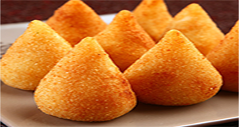

Coxinha
Contexto Histórico
A criação tem várias vertentes então aqui vai estar alguma dessas vertentes:
Primeira vertente: A cerca de 150 km da capital paulista, na cidade de Limeira, especificamente na Fazenda Morro Azul, no final do século XIX, teria vivido a família real brasileira durante certo período. Segundo a lenda, a princesa Isabel e seu marido, o Conde D’Eu, escondiam da Corte no Rio de Janeiro um filho que tinha deficiência mental. A história conta que o prato preferido da criança era coxa de galinha e que certa vez a cozinheira da família não tinha quantidades suficientes para servir, “prevendo a gritaria do menino por falta do seu alimento predileto, resolveu transformar uma galinha ‘inteira’ em coxas”, explica Verissimo. O filho da princesa aprovou tanto o novo prato que as “coxinhas de galinha” teriam passado a fazer parte das refeições diárias da família. Depois disso, teria sido um pulo para que os parentes que viessem visitar a família acabassem levando o quitute à corte carioca e aos salões de nobreza. No entanto, Veríssimo faz uma ressalva: “esta ‘história’, até que romântica, não passa de uma lenda urbana, pois é sabido que tanto a Princesa Isabel quanto seus filhos viveram no Rio deJaneiro até a queda da Monarquia em 1889 e, pelo que se sabe, nenhum deles tinha deficiência mental.
Segunda vertente: Ela teria surgido nos anos 20, em regiões paulistas que estavam no início do processo de industrialização. Dessa forma, em frente às portas das fábricas, centenas de operários com pouco dinheiro faziam filas para comprar pedaços de frangode ambulantes. Assim, eram vendidos peito,
coxa, sobrecoxa etc. Nesse contexto, alguém resolveu desfiar a carne e envolve-la com uma massa de batata, bem mais em conta do que oalimento do animal puro, já que rendia mais.Desse modo, surgiu um tipo de lanche muito econômicoe que durava maisdo que só o frango. Assim, os vendedores conseguiam armazenar o salgadopor mais tempo. Além disso, podiam cobrar
menos de sua clientela. Rapidamente, o quitute se tornou um dos mais procurados. Entretanto, de acordo com essa explicação, quem inventou a coxinha seria uma pessoa anônima.
Terceira vertente: Há quem defenda que a origem da coxinha vem da culinária francesa. Tal interpretação é baseada na obra “L’Art de la cuisine française au XIXème Siècle“, do chef de cozinha Antonin Carême (1784 – 1833). Mas será que quem inventou a coxinha foi ele mesmo? Bem, o que se sabe é que, em 1843, em Paris, esse profissional descreve uma receita que se chamava croquette de poulet (croquete de frango). Nesse livro, ele diz que seu salgado
deveria ser servido em forma de pera.Por essa razão, alguns especialistas sustentam que ele seja o verdadeiro “pai da criança”.
Quarta vertente: Por fim, uma outra explicação para a origem da coxinhaseria a necessidade dos escravos. Desse modo, essa narrativa atribui à escassez de alimentosnas senzalas como a grande impulsionadorado quitute. Afinal, famintos, os negros usariam restantes de animaisdesfiados em umamassa de mandiocapara que a comida rendesse mais. Assim, eles teriam criado uma versão mais rústica da coxinhaque hoje é uma das protagonistas no mercado de salgados.
Portanto, já deu para perceber que a origem da coxinha é mais recheada de dúvidas do que de certezas, não é mesmo? Ainda bem que o mesmo não se diz de seu sabor: todo mundo sabe que é uma delícia!

Ingredientes:
2 copos de farinha de trigo
2 tabletes de caldo de galinha
1 colher de margarina bem cheia (sopa)
Peito de frango
MODO DE PREPARO:
Cozinhe o frango e depois desfie bem. Uma dica para desfiar o frango mais
rapidamente é cozinhar na panela de pressão. Depois de cozido retire toda a água e feche a panela novamente. Balance a panela de pressão com o frango dentro e ele vai desfiar sozinho.
refogue o peito de frango com temperos do seu gosto e deixe separado.
Em outra panela coloque 2 copos de água. Inclusive, pode ser bom utilizar a mesma água que cozinhou o frango, pois está com o tempero do caldo de galinha. Acrescente 1 colher de margarina e depois que ela derreter coloque a farinha de trigo mexendo sem parar.
Deixe a massa esfriar, prove para ver se está temperada e então faça bolinhas namão e coloque o recheio. Passe no ovo e na farinha de rosca e frite até ficar bem douradinha.